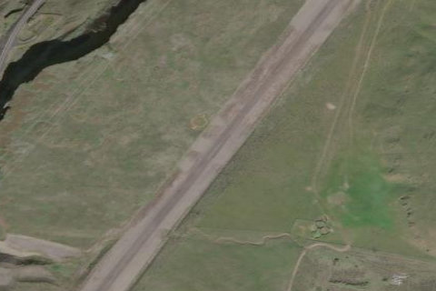

LOWER MONUMENTAL STATE
W09 · WA

Aerial imagery source: Esri, Vantor, Earthstar Geographics, and the GIS User Community
| Identifier | W09 |
|---|---|
| State | WA |
| Runway length | 3,300 ft |
| Runway width | 50 ft |
| Surface | GRAVEL |
| Runway | 01/19 |
| Elevation | 813 ft |
| Ownership | public |
| CTAF | 122.9 |
| Coordinates | 46.54972222, -118.53669583 |
Notes
[shortfield] Location Overview Lower Monumental State Airport sits about five miles south of Kahlotus, Washington, at coordinates roughly N46°32.98' / W118°32.20', with a surveyed elevation of 813 feet MSL. It's one of three state-managed airports along the Snake River, located part way up the west wall of the canyon, with WSDOT leasing the property from the Army Corps of Engineers. The single 3,300-foot gravel runway (01/19) lies in a dramatic, steep-walled setting, with terrain rising quickly to the east and south. Camping & Recreation Camping is available right on the airport, and there are picnic facilities, though there are no fire rings, no outhouse, and no water or other amenities on site. For a nearby diversion, visitors can call for dam tours of Lower Monumental Dam. Beyond the airstrip, the broader Lower Monumental Project area offers additional recreation, including boat ramps along Lake West, picnicking and hiking sites, and over 6,900 acres open to public hunting. Notes & Warnings This is a use-at-your-own-risk field. The gravel surface hasn't been fully compacted or sealed, so pilots need to be extremely careful during runups and takeoffs due to the potential for prop strikes. A vehicle gate limits access, but people and animals — including snakes — have been observed on the runway, and spray operators occasionally use the field as well. The windsock sits midfield on the west side, and there's a powerline 2,300 feet north of the airport plus another paralleling the field 500 feet to the west, so an overflight to check conditions and obstructions is recommended before landing. A tower obstruction lies about 6,800 feet off one runway end, and a marked/lighted powerline sits roughly 2,300 feet off the other. The field is open year-round but closes if rare snow occurs, and there's no winter snow removal. History The airstrip's story is tied to the Lower Monumental Dam itself, six miles south of Kahlotus. Lower Monumental Dam was the second of four dams built as part of the Lower Snake River Project, authorized by Congress in 1945 to make the river navigable and generate hydropower. Construction began in June 1961, and because the Walla Walla District was stretched thin with other projects, the Seattle District was given responsibility for building it — the only one of the four Snake River dams not primarily built by Walla Walla. Flooding during construction, including major events in December 1964 and January and April 1965, caused an estimated $6 million in damage to the cofferdam and delayed completion by about a year. The dam was named for nearby Monumental Rock, a basalt formation that Lewis and Clark had called "Ship Rock" during their 1805–1806 expedition. Its completion in 1969 is especially remembered for inundating the Marmes Rockshelter, a significant Stone Age archaeological site. The airstrip itself grew out of this remote, dam-support infrastructure, later becoming a state-managed backcountry airport serving pilots visiting the canyon and reservoir today.